Notes
Notes, Ma 191c: Pre-minimalism Linguistic Models
August 23, 2026
Transformational grammar (Chomsky, 1957).
Sentences have
- Deep structure (closer to semantics): represents the sentence as a tree.
- Surface structure (language-specific) represents the sentence as a tree after some transformations.
Example 2.8. Consider the sentence
John eats the apple.
1. Deep structure represents the sentence using a tree (imprecise, but bear with this):
2. Transformational grammar equips us with a couple of pre-built transformations that we can use on this tree (passivization, question formation, negation, movement, etc.). The point of these transformations is to produce a list of related sentence-trees and say they are equivalent:
John eats the apple.
The apple was eaten by John.
Did John eat the apple?
Was the apple eaten by John?
⋮
This approach enables us to create tree families that represent the same semantic idea. The tree-representations for each of these are surface structure.
One might ask, “why did we pick John eats the apple as the deep structure tree?” We actually did not; we just made some universal assignments:
and created a tree out of that; it’s just that this tree happened to look like “John eats the apple” when unrolled. The sentence tree itself is surface-level; the deep-level is this abstract assignment tree. So in general,
There are obviously many issues with this. Here are the biggest ones in my opinion:
- Too many transformations.
- Transformation rules may not be precise.
- Multiple hard-coded rules.
- Messy when dealing with multiple languages, especially because passive transformation rules differ language-to-language.
This motivates the next idea.
Principles and parameters (Chomsky, 1981).
Two components:
- Principles (general grammar rules). E.g., “when building a grammar you must represent lexical word elements syntactically” (Projection Principle) or “each argument of a phrase gets one role” (
-criterion). These are true for all languages. - Parameters (binary variables distinguishing different languages syntactically).
So universal principles plus language-specific parameter settings compose a specific language’s grammar. If you were to design a new language, you should note this.
Example 2.9. Let’s say “heads before complements” is a parameter. Then, for English (param=1) and Japanese (param=0) respectively, possible trees allowed by the grammar are:
Through P&P, in an idealized world, languages are encoded as bitstrings that represent each parameter, with “general design decisions” enforced through the principles.
Example principles:
- Structure Preservation Principle
- Projection Principle
- Subjacency Principle
Example parameters:
- Head-directionality
- Subject-side
- Pro-drop
- Null-subject
- Word order (SOV, SVO, VSO, VOS, OVS, OSV)
There are a couple problems with P&P:
- Interdependencies between parameters. Mathematically, an aim is to figure out the “ideal set” of generators, but linguists haven’t found this yet.
- Changes of parameters as languages evolve (e.g., word order changes in Homeric to Classical Greek, switches from Old English to English, etc.).
Notes, Ma 191c: Mathematical Models of Generative Linguistics
August 22, 2026
What is linguistics?
1. Syntax is the subset of a language’s grammar that has to do with how words legally combine into sentences. (Other subsets include morphology, which deals with how morphemes combine into words, and phonics, which deals with individual unit sounds.)
2. Language is not just a “sequence of words” because some sequences are structurally illegal. Rather, language is a “sequence of words that follows a template, paired with a hierarchy.” The hierarchy is important, as the same word-sequence with different hierarchy can constitute different sentences:
[I saw [the man with the telescope.]]
[I saw [the man][with the telescope.]]
Another example:
I shot an elephant in my pajamas.
The sentence has two possible syntactic structures.
Here, in my pajamas modifies the verb phrase: I was wearing the pajamas when I shot the elephant.
Here, in my pajamas modifies the noun phrase an elephant: the elephant is in my pajamas.
3. Language can be viewed as a “structure” because it is hierarchically composable. On the morpheme-level, consider:
(un-(friend)-ly))-ness
or as a tree,
These trees can be further composed to give a tree structure on the whole sentence.
4. An i-language is a set of internal grammatical rules in each person’s mind. Thus, i-languages for e.g. English differ person-to-person. There is some intuitive sense of “this sentence feels right” (grammaticality) that each person has based on their specific i-language.
5. There might be some math involved in linguistics; namely, operators defined on the language-trees.
Generative linguistics: formal languages.
Formal languages describe strings of words recognizable by varying classes of automata (called Chomsky hierarchy).
Structures that give rise to formal languages:
- Programming languages
- Some discrete group presentations
The question: which classes of automata can recognize natural languages? A grammar is a quadruple
where
and are disjoint finite sets: non-terminal and terminal symbols, respectively. is the start symbol. is the set of production rules, acting as a finite rewriting system on .
The language produced by a grammar
Example 2.1. Consider grammar
Note that a possible word in
The Chomsky hierarchy.
Type 0: unrestricted grammar, recognizable by Turing machine. Production rules are general:
Type 1: Context-sensitive grammar, recognizable by linear bounded automaton. A context-sensitive grammar is one with
Note that the context is fixed and just the middle part is re-written. Type 1 is a more restricted version of Type 0.
Type 2: Context-free grammar, recognizable by nondeterministic pushdown automata. Special case of context-sensitive, with
Type 3: Regular grammar, recognizable by finite state automata (e.g., NFA, DFA). More restricted version of Type 2 (we’ll see why in the next example).
Generally, we find that
in terms of expressive power.
Example 2.2 (Context-sensitive grammar). Consider the context-sensitive grammar
Then, we find possible strings are
and in general,
Example 2.3 (Context-free grammar). Take the context-free grammar
Then, we find possible strings are
and in general,
We know this
Example 2.4 (Regular grammars). Consider
It is clear this is a deterministic finite automaton:
with
How good are CFGs at representing natural language?
We show not-context-free by highlighting cross-serial dependencies in the language. [Why cross-serial dependencies yield context-free grammars?]
Some examples of context-sensitive languages:
- Dutch.
- Swiss-German. Some legal sentences are of the form
for example, “Jan säit das mer (d’chind)
(where is the reversal of ).
However, in general, context-sensitive grammars are overkill for representing natural languages. What is the weakest grammar able to represent natural languages?
Formal languages of finitely presented groups.
Consider a situation where the grammar is a finite group, e.g.,
Example 2.5. Consider
Example 2.6. Consider
What kind of formal languages can be represented by such finite groups? Algebraic properties of
is regular iff is finite. is context-free iff has a free subgroup of finite index.
Example 2.7. Take the infinite group
We know
Since no combination of
Next, we define
it follows that
We define
so
This section just shows that there is a nice tie between groups and languages. It doesn’t mean we have to use them over production rules.
Boundaries of Babel problem.
How do we formally characterize the space of natural languages? It is between context-sensitive and context-free. What is the geometry of this space? (Geometry basically means we represent each language as a point, with dimensions such as “head size.”)
We want a formal model to describe natural languages. Formal languages are no longer viewed a good way to model generative syntax.
- They focus on strings rather than structures. Remember that the same string can have different meanings based on the hierarchy. Only focusing on the strings means that the hierarchy information is not generated.
- The production rules get too complicated.
- There are too many languages in the context-sensitive class that are not natural languages.
CFGs are too weak for some natural-language dependencies
⇓
need mildly context-sensitive power
Knowing which strings are legal isn't enough
⇓
need a theory that actually generates syntactic structures
So, context-sensitive grammar is more powerful about strings, not automatically better about trees.
Notes on Graph Pebbling (continued)
July 16, 2026
Let
Example 2.1. Consider
Generally, we conjecture that from a single pile
Notice that
Definition 2.1. We define
Example 2.2 (Trivial
Notes on Graph Pebbling
July 14, 2026
Ordinary graph pebbling.
Graph pebbling (now a famous mathematical game) was originally introduced to solve the Erdős–Lemke conjecture: given an integer sequence
Now, let
Definition 1.1 (Configuration). A configuration is an assignment
Definition 1.2 (Pebbling move). A pebbling move from vertex
Thus, moving a pebble across an edge has a cost; the total pebbles in
Example 1.1. Consider the path graph
Suppose all pebbles are at
Example 1.2. Consider
| Vertex | Pebbles needed to guarantee arrival |
|---|---|
| 1 | |
| 2 | |
| 4 | |
| 8 |
It seems
Example 1.3 (Reachability depends on the configuration). Consider
However,
Definition 1.3 (
Definition 1.4 (Pebbling number). The pebbling number
Note that to prove
Example 1.4 (Computing
Proof. We can immediately establish a lower bound from the previous example; since there exists
Because
Finally, we must check if
Hence,
Relativity (Escher)
June 18, 2026
Aim: Design a perspective-based game where:
- The player initially doesn’t know the rules and must figure them out.
- If the player knows the rules, the game is trivial.
- Level
introduces a counterexample to what the player thinks the goal is.
The game is perspective-based because it is possible for the player to possess a sub-par world model (perspective) (i.e., one that only perfectly holds from Level 1 to
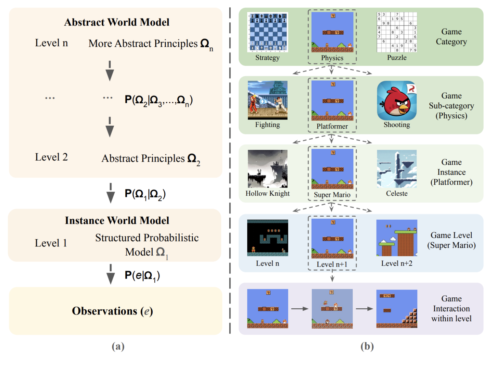
This is analogous to Relativity (e.g., the staircase in one orientation is a roof in another).
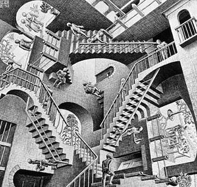
https://arxiv.org/pdf/2507.12821
Loose thoughts: if a platformer, the game map might be similar to Relativity. What seems like a block in 2D could be a door in 3D; progressing across levels in 2D in a scrolling platformer is in reality walking through doors in a 3D choose your own adventure; the 3D choose your own adventure could have interesting topologies, like a Mobius strip taking you back to the start, but with different mechanics only visible in 3D (so if the player still has a 2D world model, they have to build a fake mod 2 rule that doesn't capture the real universe's mechanics).
Fugue: The orphans' crossroads (Bach, "Little" Fugue in G minor, 0:00-0:55)
June 17, 2026
An abandoned road,
Silent,
Besides the quiet footsteps,
Of two war orphans,
Walking towards each other.
A frail young boy,
Starved,
Ribcage poking through aged skin.
Bright crimson hair,
Beautiful,
Yet matted,
By the cold wind,
And lack of shelter.
An old man,
Long white beard,
And bald head,
Who only knew pain:
At age seven,
Mother's throat slit,
In the living room,
...Father, gutted,
Doused in gasoline,
And ignited,
By enemy troops.
The old man,
Glancing at a fellow war orphan,
Eyes him,
Smells him,
Ignores him,
And trods along the path to his village,
As countless others had done to him before.
"Learn pain," he yells silently,
"And feel what I feel.
Orphan...so? You're still a boy.
Whereas I had to endure that,
For my entire life."
The old man,
Pitying a fellow war orphan,
Clothes him,
Bathes him,
Feeds him,
And reads him stories,
As he warms in the campfire.
But what started as pity,
Grows into habit,
And soon,
Years pass,
Their bond morphing,
From stranger and stranger,
To father and son.
But alas,
The old man,
Had unfinished war duties,
To fulfill,
Without the boy.
So as Father,
Attempts to make,
His way home,
The boy grabs,
An origami rose,
From his bag,
Looks up,
With innocent eyes,
Teary,
Presenting his father with a gift.
So as Father,
Attempts to make,
His way home,
The boy grabs,
A dark steel rod,
And,
Once-again betrayed,
Pierces the old man's chest from behind,
Kicking him into the lake.
And,
After fifty long years,
The old man,
Pushing one more away,
Remains empty,
Devoid of a human heart.
And,
After fifty long years,
The old man feels content,
For he finally has,
A single soul,
To call his own.
And,
After fifty long years,
The frog,
At the bottom of the well,
Drifts off,
Into the great ocean.
GPU-Accelerated Simulated Annealing for VLSI Macro Placement
June 17, 2026
Given a rectangular chip die, a set of rectangular macros, fixed pins, and a hypergraph netlist, the program searches for a legal macro placement that minimizes estimated wirelength and overlap, with the heavy cost evaluation on the GPU.
Background. Macro placement is an important problem in chip physical design. In modern chips, large blocks such as SRAMs, analog blocks, accelerators, and IP modules must be placed on a two-dimensional die. The placement has to satisfy geometric constraints, such as keeping macros inside the die and avoiding overlap, while also optimizing objectives such as wirelength, routing congestion, and timing.
Input: a rectangular die, a set of rectangular macros (design blocks), and a set of nets (wires) connecting those macros and fixed pins. For example:
{
"die": {"width": 1000, "height": 1000},
"macros": [
{"name": "m0", "width": 100, "height": 80},
{"name": "m1", "width": 120, "height": 90}
],
"pins": [
{"name": "p0", "x": 0, "y": 500}
],
"nets": [
["m0", "m1", "p0"]
]
}
The goal is to assign each macro an
The program first generates an initial random placement. The CPU baseline improves the placement using simulated annealing. Then the CUDA implementation runs many annealing chains in parallel and returns the best placement found.
Computation. Each placement consists of coordinates for
The half-perimeter wirelength of a net
The total wirelength is
The overlap penalty between two macros
The total overlap penalty is:
The simulated annealing algorithm proposes random moves such as moving one macro to a new location or swapping two macros. If the new placement has cost difference
The CPU version runs a single simulated annealing chain. The CUDA version runs many independent chains in parallel, each starting from a different random initial placement. At the end, the program chooses the best placement among all chains.
Results. Each synthetic benchmark below uses the same SA schedule (
| Benchmark | Macros | Nets | Die | CPU total | GPU total | CPU time | GPU time | Speedup |
|---|---|---|---|---|---|---|---|---|
| Small | 8 | 20 | 1000×1000 | 15,145 | 15,086 | 124 ms | 510 ms | 0.24× |
| Medium | 64 | 200 | 4000×4000 | 796,481 | 755,343 | 3,474 ms | 1,241 ms | 2.80× |
| Large | 256 | 1000 | 10000×10000 | 11,826,771 | 11,603,684 | 44,758 ms | 12,761 ms | 3.51× |
The GPU pays off once the problem is large enough to amortize kernel-launch and transfer overhead: it is ~2.8× faster at medium and ~3.5× faster at large, while also reaching a slightly lower final cost (more chains explore more of the space). On the tiny 8-macro problem the GPU is slower than the CPU (0.24×) — there isn’t enough work to hide the overhead.
Small benchmark. 8 macros, 20 nets, 1000×1000 die. Both solvers cut the cost ~99% with zero overlap and zero boundary violation.
| Metric | CPU | GPU |
|---|---|---|
| Total cost | 15,144.77 | 15,085.94 |
| HPWL | 15,144.77 | 15,085.94 |
| Overlap | 0.00 | 0.00 |
| Boundary | 0.00 | 0.00 |
| Improvement | 99.12% | 99.13% |
| Runtime | 124.2 ms | 510.1 ms |
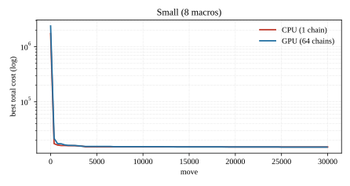
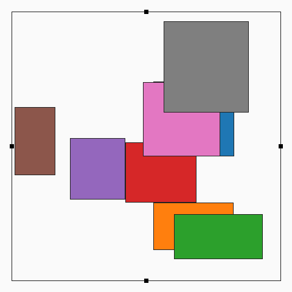
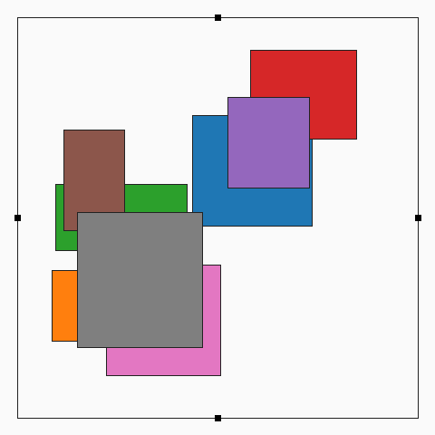
Medium benchmark. 64 macros, 200 nets, 4000×4000 die.
| Metric | CPU | GPU |
|---|---|---|
| Total cost | 796,480.57 | 755,342.94 |
| HPWL | 796,310.11 | 755,104.69 |
| Overlap | 17.05 | 23.82 |
| Boundary | 0.00 | 0.00 |
| Improvement | 97.93% | 98.04% |
| Runtime | 3,474.2 ms | 1,240.8 ms |
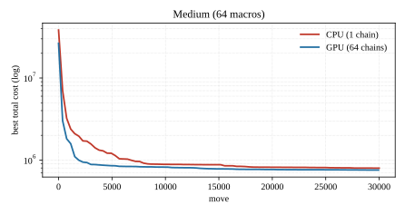
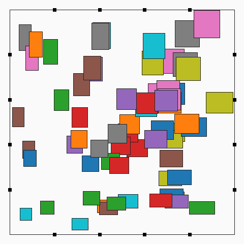
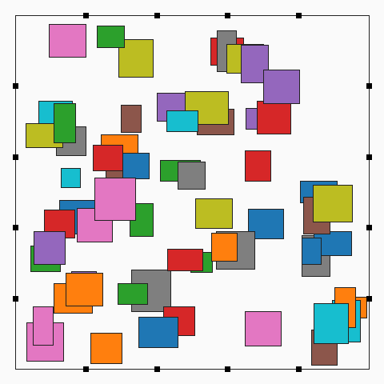
Large benchmark. 256 macros, 1000 nets, 10000×10000 die.
| Metric | CPU | GPU |
|---|---|---|
| Total cost | 11,826,770.79 | 11,603,684.00 |
| HPWL | 11,814,036.77 | 11,597,189.00 |
| Overlap | 1,056.78 | 448.23 |
| Boundary | 21.66 | 20.13 |
| Improvement | 93.05% | 93.18% |
| Runtime | 44,757.9 ms | 12,761.3 ms |
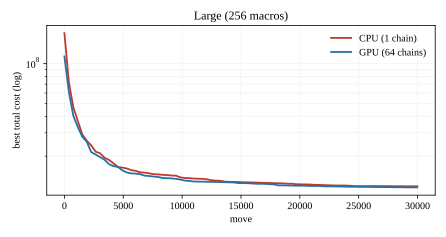
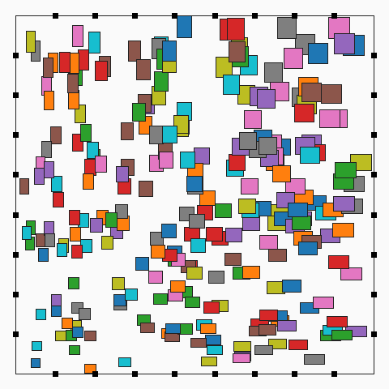
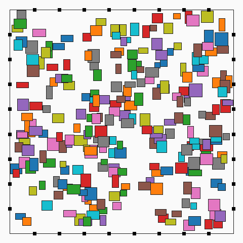
At medium and large sizes a small residual overlap remains (the penalty keeps it tiny but nonzero); the 8-macro case converges to exactly zero overlap.
Euthyphro, Plato
June 16, 2026
[1] Socrates outlines a problem with a god-given absolute piety within a polytheistic religion: are pious things pious because the gods love them, or do the gods love them because they are inherently pious?
- The main framework for the former is divine command theory. Risk: morality becomes arbitrary.
- Frameworks for the latter: moral realism, rationalist ethics, etc. Risk: morality is defined outside of god(s).
[2] Euthyphro’s claims are that 1) Zeus would prosecute his own father for manslaughter, 2) he is the only man who knows what the gods would do (perfect religious knowledge), and 3) Man should aspire to do what God would.
- Socrates’ initial critique against 1) is a pushback on prosecuting one’s family. To this, Euthyphro cites Zeus, who put his father Kronos in bonds for “unjustly swallowing his sons,” and Kronos, who castrated his father Ouranos.
- Socrates finds trouble with 3) as it requires a definition of piety and an agreement on all gods’ actions. See [3].
[3] The present situation is generalized into a debate on piety, which Socrates opens by asking for a simple definition.
- Euthyphro’s initial definition: piety is prosecuting the wrongdoer. Socrates easily refutes this as an example of piety rather than a definition.
- Euthyphro’s revised general definition: what is loved by the gods is pious, and what is not loved by the gods is impious (loved by the gods iff. pious).
- Socrates points out the problem of disagreement on piety within a polytheistic framework, to which Euthyphro claims (see [1]) that on his current matter, the gods reach agreement. This implicitly re-defines piety to “what is loved by ALL gods is pious”, and impiety to “what is hated by ALL gods is impious.”
- This breaks the biconditional: now, something can be pious without being loved by all the gods (since it no longer falls under the definition of impiety). Similarly, something can be impious without being hated by all the gods.
- This changes Euthyphro’s “definition” of piety to an example of it (“what is loved by ALL gods” is an example of many things which are pious).
- Socrates asks, “is the pious loved by the gods because it is pious, or is it pious because it is loved by the gods?”
- (Biconditional can hold; good movie iff. is loved by all critics. However, is it a good movie because it is loved by all critics, or is it loved by all critics because it is a good movie? The latter is more plausible; there exists a deeper reason humans find a movie “good,” and all critics have captured it.)
- Socrates takes a similar stance: the pious is loved by the gods because it is pious.
- Euthyphro revises piety again: “the part of justice concerned with attending to the gods.”
- This definition seems to be something loved by all the gods, so it is valid.
- Socrates refutes: “what can humans give gods that they don’t already have or can get?”
- (I disagree with Euthyphro’s slavery analogy; because humans are finite, the master puts the slave to work on tasks he does not have time or will for. This does not seem to be the form of “attending” gods would like from humans. Rather, the only thing gods cannot do (self-imposedly) is violate human free will; hence, they require attending in human belief, e.g., prayer, sacrifices, etc.)
- Still, if piety is sacrifice/prayer that pleases the gods, then Euthyphro has circled back to “pious is what is loved by the gods.”
The meaning of life
June 4, 2026
I had to think about this question a lot when:
- Moving to California and forfeiting college enrollment.
- Living alone in Sonoma County, working to prove to parents, friends, VCs, and myself that I was exceptional.
- Working 16 hour days in Arcadia, ending up in the hospital (treating the people around me poorly; zero tolerance for distractions).
- Meeting my (former) love; sleepless nights working to afford an immigration lawyer so she wouldn’t have to leave the US.
- Contemplating various ethical dilemmas in business.
- Shutting down my second startup.
- My friend’s death.
- Quitting my first and second (well-paying) jobs.
- Giving up my girlfriend’s hand in marriage and coming to Caltech.
- Watching my ex girlfriend struggle with homelessness, solitude, and suicide; failing to get the New York Police Department to track her down.
- My grandfather’s death.
My experiences have shaped me into (currently) a firm existentialist. I value:
- Knowledge and understanding. I want to understand and imagine the mathematical ideas that lie even beyond our observable universe; what can be thought of? What can’t be computed? I want to understand the recursive structure of language; the structure of music, comedy; what is moral, just (how would various philosophers have approached my gap year?); the culty-ness of startups and universities, Girard’s mimetic theory, and organized (political?) (religious?) groups.
- Being special.
- Self-improvement. After running my second business for a couple of months I began to feel unstoppable; I was solving challenge after challenge. I know that doesn’t sound unique to business…I can’t explain this properly yet; I’ll add examples when I think of them.
- Love. My favorite one-liner encapsulating love is ironically from Nietzsche (Beyond Good and Evil, Aphorism 153): “That which is done out of love always takes place beyond good and evil.” 'nuff said. See this.
My chat with Sam Altman
June 1, 2026

I used to help out at a VC/accelerator that Sam Altman put money into. My job was to read applications and determine who gets accepted (maybe funded). I saw it as paying back gratitude to something fundamental to my journey: 1) I had participated in it before, and 2) Nick and Aili helped give me a place to live when I was relatively desperate.
I met Sam Altman a couple times but I didn’t have a solid chance to chat until SF Parc (at the accelerator). We went over my life story and planned next steps. I expected him to be super anti-college; but he gave me surprising advice: go to Caltech! He mentioned some important facts that I needed to hear at the time:
- "Don't be afraid. The regret of watching someone else live the life that could've been you outweighs the comfort of safety."
- "Your life is yours; not your parents', investors', friends', or strangers'. Do what you want to do, not what you feel like you should be doing."
- "Only you have enough context to understand the best decision for yourself. Be careful and don't average advice."
Places I've lived
May 30, 2026
I moved around a lot, so everywhere I lived felt temporary (including Caltech, for the first three months). Some places I’ve lived are:
- Ashburn (longest)
- Hotel Trio, Sonoma County
- Arcadia House, North Berkeley
- Dogpatch
- Virginia Swan Pl, Cupertino
- Redberry Way, San Jose
- 29 Cecil Ave, San Jose (first time being responsible for a home)
- 324 South Baywood Ave, San Jose
- 524 Columbus Ave, North Beach
- Caltech, Pasadena (2nd longest)
Each place comes with memories, and a past version of myself; the places that are burned deepest in my heart are 1, 7, 8, 3, 2 in that order.
Notes on Character Tables
May 20, 2026
Characters are constrained by group relations.
A character table is not filled with random character values such that the row and column orthogonality relations are satisfied. Rather, each row must come from an actual representation
This is easiest to see for a degree-1 representation
Example 1.1 (Degree-one characters of
Let
Note that possible values of
Then, since
so
so the degree-one section of
The takeaway: suppose someone produces a new row for
Note that for higher degrees,
How orthogonality helps complete a table.
The previous section explained where character table rows come from: traces of genuine representations satisfying the group relations.
Orthogonality enters after we have some genuine characters in hand. Its role is to compare characters and determine what irreducible pieces they contain (the character rows must be of irreducible characters
We can compare characters in the character table through the inner product. Because characters are consistent over conjugacy classes,
Example 2.1 (Why do the conjugacy class sizes appear?). Suppose
Then, let
which we do by picking representatives for the one-cycles, two-cycles, and three-cycles, as
How does orthogonality check irreducibility?
Example 2.2. Recall that the two degree-one characters of
We emphasize that inner product relation
What orthogonality is really saying.
For characters
Example 2.3. Suppose
Note this is a shortcut to
contains 2 copies of and one copy of . contains 1 copy of and 3 copies of . says there are shared copies and shared copies for a total of shared irreducible character copies.
Thus, the inner product
What a character table tells us about a representation.
A character table does more than simply list irreducible characters. Once the irreducible rows are known, it lets us decompose the character of any representation into irreducible pieces.
Suppose
where
so the inner product of a character
Example 3.1. Consider the irreducible characters of
and consider the degree-4 character
which correspond to the multiplicity
which adds up.
Note then that we immediately know
The next proposition goes further into character irreducibility without finding invariant subspaces.
Proposition 3.1. Suppose
Proof. We know
Similarly, if
Example 3.2 (The character of a direct sum). Suppose
with character
Then, suppose
Character tables of direct products.
Suppose
Consider
Aside 4.1. An element
Example 4.1 (Concrete one-dimensional example). Suppose
Proposition 4.1. The following character relation holds:
Example 4.2. The trace of a tensor product of matrices is the product of their traces,[2] so reasonably,
Example 4.3 (
Now, consider
and filling out the character table,
Example 4.4 (
We partially complete the
We leave the rest as an exercise to the reader.
For what the tensor product of two vectors is, its bilinearity, and a basis for the tensor product of two spaces, see Introductory Notes on Tensors.
Derived from the block form of a tensor product of matrices in Introductory Notes on Tensors.
Mother's Day
May 10, 2026
On May 10,
2025,
Mother,
Was stuck at home.
Her son,
In college,
And a pile of dishes,
Unwashed,
Left in the sink,
Looking like they
Had just spent time on the floor.
The TV,
Blaring,
She turns her head,
Absent-mindedly.
And for a warm,
Fleeting moment,
She is excited,
As she sees her eldest son’s name,
On the Channel news report.
Directly below,
The yellow tape,
Totaled car,
And burnt up body,
Only recognizable,
By the ink tattooed on his severed arm,
Lying,
Cold,
All by itself,
On the pavement.
Amma,
She read out loud.
For even after death,
Her beautiful son,
Had her name,
Burned,
Into his skin.
So she smiles,
A knowing smile,
Marking a date,
On her pocket calendar.
And,
She trudges up the stairs,
With a rope in her hand,
Dutifully knotting it,
To a blade in her ceiling fan.
And,
Once again,
On Mother’s Day,
The two of them were one.
Thanks to Tuyako for discussing this poem with me.
Schur's Lemma
May 9, 2026
Irreducibility forces equivariant maps to be isomorphisms or zero.
An ordinary linear map
A
or in other words, be
When
Example 1.1 (Why
implying
Example 1.2 (Why
implying
Hence, to find
What irreducibility does to
Suppose
Suppose
Now, suppose again
Similarly, from irreducibility of
Example 1.3 (Trivial representation to sign representation). Let
We know every linear map
Hence,
We could have gotten this without computation through Schur’s Lemma. Since
(If the representations were unfamiliar, then we would have to do the
Example 1.4 (Trivial representation to itself). Now, let
so all nonzero maps of
Alternatively, by Schur’s Lemma, since
Equivariant endomorphisms of irreducible representations are scalars.
Let
First, we show
Since
Hence,
or in other words, every equivariant endomorphism
Two examples of non-scalar equivariant endomorphisms (and thus reducible
Example 1.5 (Why two eigenvalues reveal reducibility). Let
be an equivariant endomorphism
since an eigenspace of
In general, a nonzero proper eigenspace of
Example 1.6 (A non-scalar upper triangular map). Suppose
is an equivariant endomorphism of a representation
which is
Example 1.7 (A reducible representation). Now, let
Let
We compute all nonzero equivariant maps
so we need
Schur’s Lemma does not force
and we note that these are both
Example 1.8 (An equivariant projection). Continuing with the previous representation
Then,
Birthday Party
May 2, 2026
On March 9,
He comes home,
With a birthday cake,
To wish her,
And hug her.
Only to find her,
With a rope around her neck,
Hanging from the ceiling fan.
He cuts her down,
And lays her limp body on the bed,
Propping a pillow behind her neck.
Then,
He feeds her cake,
Like she used to do
To him.
And,
Wiping crumbs off her stiff lips,
While squeezing her lifeless hand,
Tightly,
He laughs with her corpse,
'Till the sun sets.
Giving the dead girl,
Her very first
Birthday party.
100 Letters To A Dead Girl.
Thanks to Jan for feedback.
The Girl at the Phone Booth
April 22, 2026
The girl at the phone booth
Makes a call.
“Mom…Dad!” she cries.
No response at all.
As a rumbling train passes by,
She remembers Father’s final lie.
“America has a lot in store.”
Then he shoved her out the door.
When the sun begins to set,
The brave girl shivers from the cold.
She doesn’t own a jacket,
Just a worn-out shirt, filled with holes.
She puts down the phone in dismay,
And on the rock-hard ground, her head lay.
She tries dozing off, into a slumber,
Ignoring her empty stomach’s hunger.
Thanks to Nicole for reading drafts.
Introductory Notes on Tensors
April 15, 2026
What is
Example (A basis for
As an example, take
so, in coordinate form,
The tensor product of matrices. Take
Define
Then,
so the trace of a tensor product is the product of the traces. The same diagonal-entry computation generalizes this to dimensions